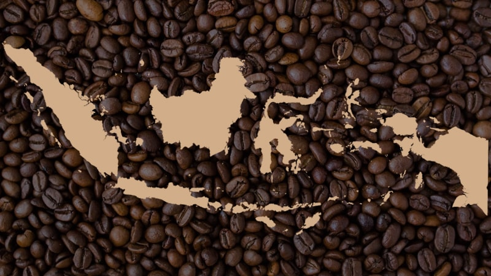

Sekilas Kopi
Kopi adalah minuman hasil seduhan biji kopi yang telah melalui proses roasting dan dihaluskan menjadi bubuk. Jenis kopi yang beredar secara luas adalah arabika, robusta, dan liberika. Kopi merupakan minuman ke-2 terpopuler di dunia setelah teh. Bagi banyak orang, kopi bukan sekedar minuman selingan tapi adalah bagian dari gaya hidup.
Terdapat beberapa jenis biji kopi salah satunya adalah arabika. Kopi arabika awalnya tumbuh di Kongo. Biji kopi ini rentan, sehingga butuh perawatan ekstra dan lokasi yang tepat. Beberapa ciri khasnya antara lain aroma yang harum, rasa sedikit asam namun tetap memiliki rasa pahit, serta terasa kental di mulut. 80% pasar kopi Nusantara didominasi oleh jenis kopi arabika.
Indonesia punya beragam varian biji kopi Nusantara. Biji kopi ini menghasilkan cita rasa, aroma, dan tingkat keasaman kopi yang berbeda - beda pula. Perbedaan karakteristik biji kopi ini dibedakan berdasar tanah penanaman, ketinggian lokasi, suhu, dan temperatur lokasi.